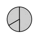
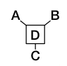
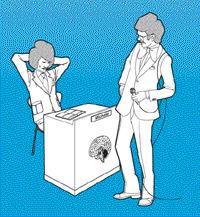
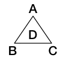
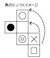

| あなたの脳力をチェック！ 大人のIQテスト | |
| 株式会社アキュートエンターテインメント | |
| PHP研究所 (2004) | |
あなたの脳力をチェック！ 大人のＩＱテスト
株式会社アキュートエンターテインメント
あなたは自分のＩＱを知っていますか？
みなさんはＩＱのテストを受けたことがありますか？
小学生のころ何やらよくわからない図形や数字の問題を短時間で解かされたことがあったはず、今思うとあればＩＱテストだったのかと思い知らされます。
ＩＱの数値を教えてもらった方もいれば、教えてもらえなかった人もいたり、あとは何となく高かったとか低かったとかを漠然と教えてもらった記憶もあったりとか......当時としてはその程度のことでした。
ＩＱとは知能指数のことです。
ＩＱのもともとの根拠は、「その人の精神年齢は実際の年齢にくらべてどうか」、ということでした。たとえば、実際の年齢が15歳の人が、精神年齢15歳であるとすると、ＩＱは普通（＝１００）です。その人が15歳であるのに、20歳の精神年齢であるとすると、ＩＱは高くなります。その逆もそうですが、その人が15歳であるのに、12歳の精神年齢であれば、ＩＱは低くなります。ＩＱとは、そういった形で精神年齢を数値化するためのものでした。日常生活において支障がないかどうか、精神年齢をはかるための基準だったわけです。そのために、図形や数字を使った問題を解かされたということなのですね。
しかし時代を経るにしたがって、ＩＱの理論が「精神年齢」という意味あいから「脳のレベル」という意味に変わってきました。それが多くの方がイメージされる「ＩＱ」です。そう、ある集団のなかで自分がどのレベルにあるか、ということを数値化したものです。
得点が平均点の場合は１００となります。得点が高ければ１０１、１０２というように１単位ずつ上がっていきます。得点が低ければ99、98というように下がっていきます。通常は１００を基準点にして前後30～40の幅で算出されるのが一般的です。そのため、ＩＱ３００というような数字は、現実的にはおそらく出現しないと思われます。ＩＱ１８０という数字であればほとんど出ないかもしれませんが、ＮＡＳＡなどで働いているような誰もが認める「天才」であれば出る可能性がないわけではありません。
人間の脳はどんなに使っている人の場合でも２％程度に過ぎないといわれています。あの発明家エジソンですら使った脳は３％だとか。いまだ医学的にもブラックボックスといわれている「脳」。どんどん刺激を与え、訓練し、鍛えることで、脳はレベルアップします。そしてそれによってどんどん脳に血が流れます。結果として老化防止、ひいては若返りにも役立ちます。どんどん脳を使いましょう。脳を活性化させて脳細胞の死をくいとめたほうが、体にはよいのです。
本書は、大人がゲーム感覚で楽しみながらパズルを解くことによりＩＱを測ることができます。小学生が向き合うＩＱテストとは違って、大人が取り組むための問題として仕上げています。できるだけ知識に依存しないような問題にすることで、算出条件が大きく左右されないように工夫されたものとなっております。
問題はオリジナルで作成されたものであり、ライセンス等により引用したものではありません。ＩＱ診断・力脳（ウェブサイト http://www.iqiq.jp/）というこの本のベースとなったゲームは、全国のガストに設置されているマルチメディア端末（プラスｅ端末）で、年間50万人のプレイ数を実績としてもつものでした。ＩＱ１５０以上の認定会員で構成される「ＭＥＮＳＡ」のメンバーであるゲームプロデューサー兼クリエーターの手によって、その問題をバージョンアップしたものなので、その問題の精度は一定のレベルをクリアしています。
ＩＱは、ある特定の母集団においてその人がどの位置にランクされるか、ということが算出の基準となります。そのためここでは平均点、標準偏差にもとづくオリジナルのアルゴリズムでＩＱを算出しております。
普段あまり見ないような幾何学的なパズル問題に触れ、また解くことで、「脳のサビ」が落ちていくよな気持ちよさを感じるはずです。
では楽しみながら自分のＩＱを測ってみてください。
ＩＱの算出とこの本の使い方
問題は５つのステージで構成しております。１ステージ30問。そのあとに答えと解説があり、次に、正解数によってＩＱを割り出せる表がついております。Ｓｔａｇｅ１は、わりと練習問題に近いレベルですが、次のステージに進むにしたがってどんどん難しくなっていきます。Ｓｔａｇｅ５は、かなりハイレベルな問題が続出しますので無理にやらなくてもかまいません。時間をかければ解ける、発想をかえれば解ける、無理な場合は解説をみて納得する、というように自分に合ったやり方で楽しんでやってみていただければよいでしょう。
ステージのおわりには、あらかじめサンプリングされた統計データが盛り込まれています。この本の原作者が運営するウェブサイト「「ＩＱ診断・力脳」http://www.iqiq.jp/）で公開された参加者における実績データをもとに算出したものです。テストが完了したら、その得点をもとに、算出法から自分のＩＱをステージごとに算出してみてください。また、ＩＱ表の下にインターネットアクセス用のＵＲＬがありますので、インターネットの接続環境をお持ちの方はアクセスしてリアルタイムな参加者のなかでのＩＱを知ることもできます（無料）。
各ステージで算出されたＩＱはメモをしておいてください。各ステージで取得したＩＱの平均が、より精度の高い最終的なあなたのＩＱとなります。
※本電子書籍は横書きで構成されております。なにとぞご了承ください。
Ｓｔａｇｅ１では、頭のウォーミングアップのため、昔なつかしいＩＱ問題をアレンジして収録しました。比較的簡単な問題で練習問題のレベルとなっております。「脳のサビを落とす」つもりでトライしてもらえばよいでしょう。いわゆる「慣らし運転」のようなものです。時間をかければすべて解ける問題のはずです。
「30問で10分」なので１問あたり平均20秒程度で進めていくのがよいと思われます。
ステージの最後にＩＱの算出表がありますので、自分の得点を集計してあてはめてみてください。自分のＩＱがどのくらいか判定することができます。ＩＱの精度をより高めるためには、制限時間を守って進めることがベストです。
気負わないでチャレンジしてみてください。
みかん７個 りんご１個
みかん６個 りんご２個
みかん５個 りんご３個
みかん４個 りんご４個

２回
３回
４回
５回

答えと解説
それぞれの数字の間の差は２つずつである。
７＋２＝９
記号を埋めると８－５＝３、６＋３＝９、６÷３＝２となり、使われているものは－ ＋ ÷である
上から見た図に、横から見た図のブロック数を書き込んだ状態は下図左側のようになる。下図右側のように立体図形にするとさらにわかりやすい。
すべての条件をあてはめた状態はこのようになる。
ことばの頭に、「私は」とつけるとよくわかる。
図形は左回りに90度ずつ回転している。
四角の箱にするには、下段に1個、上段に3個必要である。
つるかめ算といわれる問題である。
【解法１】
りんごを８個買ったとすると100円×８個＝800円
実際に持っているのは500円だから 800円－500円＝300円 300円少なくはらうことになる。
みかんを１個買うと、りんご１個より 100円－50円 安い。
300円少なくするには、 300円÷50円＝６個
みかんをA 買えばよい。したがってりんごは２個となる。
【解法２】
方程式による解法は次の式となる。みかんをＡ、りんごをＢとすると
50円×Ａ個＋100円×Ｂ個＝500 Ａ個＋Ｂ個＝８個
Ａ＋Ｂ＝Ｃとなる。

必要なパーツを合体させるとこのようになる。
１個で構成されるもの９個
４個で構成されるもの３個
９個（外枠）で構成されるもの１個
９＋３＋１＝13
このように探すとわかりやすい。
逆に順をおって展開するとわかりやすい。
実際に折り紙などで再現するとよくわかる。
「今晩は、一緒にごはんを食べましょう」というように、「今晩」と「は」がいっしょになったものがあいさつことばになったものである。
18.4×５＝92 189÷２＝94.5 98－４＝94 24＋69＝93
１個だけ裏返しになったものである。
【解法１】
●●＋○＝４なので●と○はそれぞれ０～４ぐらいの数字とあたりをつける。（●、○）＝（０、０）（０、１）というようにあたりをつける。
●、○とも０ではなさそうなので
（●、○）＝（１、１）（２、１）（３、１）（４、１）というように試していく。
【解法２】
２番目の式より、○＝●●●－１
１番目の式に代入すると●●＋（●●●－1）＝４
ということは●●●●●＝５ ●＝１
【解法３】
方程式による解法は次の式となる。
●×２個＋○×１個＝４ ●×３個－○×１個＝１
つまり２Ａ＋Ｂ＝４ ３Ａ－Ｂ＝１
のみ、下のような図形までしかたどりつけない。
４リットルと３リットルで、どうやって13リットルを作るかである。
４リットル×１回＋３リットル×３回＝１３リットル 最低４回となる。"
だと、○の面はすべて隣接していなければならないので、○の面がＡ、Ｂのように裏側にくる場合は成立しない。
□の中を埋めると
再三再四 一日一善 一朝一夕 百戦錬磨 三寒四温
次の段階では、一番内側の図形が一番外に移動している。
Ａ＋Ｂ＝Ｃの法則である。
ちょうど重なる手前の段階が一番角が多くなる。
組み立てると、１と５が重なってしまう。
１番少なくなる切り方はこの場合である。
次の段階で、時間は10分進んでいる。
１時20分から10分進むと１時30分である。"
このように切断されることになる。
○の部分が左回りに同じ向きになっていることに注目。
は裏返しになっていない。"
図のように合体する。
得点分布とＩＱ表
得点によるＩＱ算出一覧
正解数 正解率 ＩＱ値
０ ０ ３１
１ 3.3 ３２
２ 6.6 ３２
３ 10.0 ３２
４ 13.3 ３２
５ 16.6 ３３
６ 20.0 ３４
７ 23.3 ３４
８ 26.6 ３５
９ 30.0 ３９
10 33.3 ４４
11 36.6 ４８
12 40.0 ５２
13 43.3 ５６
14 46.6 ６０
15 50.0 ６４
16 53.3 ６８
17 56.6 ７３
18 60.0 ７７
19 63.3 ８１
20 66.6 ８５
21 70.0 ８９
22 73.3 ９３
23 76.6 ９７
24 80.0 １０２
25 83.3 １０６
26 86.6 １１０
27 90.0 １１４
28 93.3 １１８
29 96.6 １２２
30 100.0 １２８
このステージは多くの方が高得点をとっているようです。したがって、自分の得点が高いからＩＱが高い、というようには結びつきません。母集団のレベルが高いと差が出にくくなるから仕方のないことです。逆に、自分の得点が低いとレベルの高い母集団のなかでは差が出やすくなってしまうので、低めのＩＱとなってしまいます。
ＩＱが高かった人は、気を抜かないで次のステージでもがんばってください。
低かった人は、このステージは練習だと思って次のステージで挽回するようにがんばりましょう。制限時間をオーバーしてまで問題を解いても意味がなくなってしまいます。ＩＱ算出の精度を落とさないためにも、制限時間は守りましょう。次のステージでは集中してミスのないように落ち着いてがんばってください。
以下のサイトにアクセスして自分の得点を送信すると、参加者全体から算出したリアルタイム結果を見ることもできます。
ステージが進むごとに、だんだん難しくなっていきます。Ｓｔａｇｅ１が練習問題レベルだったのに対して、Ｓｔａｇｅ２では、中級クラスの問題に近づいたものになります。もっと正確に言うと、中の下のクラスの問題となります。
「30問で15分」なので１問あたり平均30秒程度で進めていくとよいでしょう。脳のサビが落ちたあたりなので、集中してトライしてみてください。
ステージの最後にＩＱ表があるので、Ｓｔａｇｅ１と同様に自分の得点にあてはめて自分のＩＱを確かめてください。
□平等
□合法
□同
□開発
□公式
□安定
□確認
□公開
□登校
□運
□得手
□完成
４個
５個
６個
７個
みかんが好き。
りんごとぶどうが嫌い。
果物が嫌い。
りんごとぶどうが好き。

北海道は日本で最大の面積である。
富士山は日本で一番高い山です。
日本で一番大きな湖は琵琶湖です。
日本の川で最長なのは信濃川です。
３回
４回
５回
６回
答えと解説
１番目からそれぞれ、１の２乗、２の２乗、３の２乗、４の２乗。
５の２乗は25である。
選択肢では「＋」と「－」のみ使用されることがわかる。
最初の数字が「８」で、答えが最終的に「７」になることから、必ず「－」をどこかに使用することを前提にすると、答えは早くでてくる。
記号を埋めると８＋３－４＝７
上から見た図に、前から見た図のブロック数を書き込んだ状態はこのようになる。次のように立体図形にするとさらにわかりやすい。
すべての条件をあてはめた状態はこのようになる。
Ｑ５――
否定語は次のようになる。
非公式 不安定 未確認 未公開（もしくは非公開）
不登校 不 運 不得手 未完成
平面のひし形が、点線を軸として回転した図を正面から見ている。45度ずつ回転しているので、次は縦に細長い図形となる。
四角の箱になるには、下段に１個、上段に４個必要である。
２人の条件をあてはめた状態はこのようになる。
Ａ×Ｂ＝Ｃ となる。
必要なパーツを合体させるとこのようになる。
１個で構成されるもの９個 ４個で構成されるもの４個
９個（外枠）で構成されるもの１個 ９＋４＋１＝14
１番左、短い「でっぱり」が必要
真ん中、長い「ひっこみ」が必要
１番右、長い「でっぱり」が必要
このように探すとわかりやすい。
逆に順をおって展開するとわかりやすい。実際に折り紙などで再現するとよくわかる。
「主語（名詞）」＋（範囲）＋（順位）＋「述語（名詞）」の形である。
○ Ａ＋Ｂ＝Ｃ
□ Ａ×Ｂ＝Ｃ
△ Ａ÷Ｂ＝Ｃ
◎ Ａ－Ｂ＝Ｃ

次にくる図形はこのようになる。
のみ、下のような図形までしかたどりつけない。
７リットルと４リットルで、どうやって10リットルを作るかである。まず、７リットル×２回で14リットル。次に４リットル×１回分を減らして10リットル。最低３回となる。
だと、○の面は隣接していなければならないので、○の面がＡ、Ｂのように裏側にくる場合は成立しない。
作ることが可能な四文字熟語は
大器晩成 大胆不敵
次の段階では、一番内側の図形が一番外に移動している。

Ａ×Ｂ－Ｃ＝Ｄ の法則である。
ちょうど重なる手前の段階が一番角が多くなる。
●どうしは隣り合っている状態の展開図である必要がある。対面にあるものは成立しない。
１番多くなる切り方はこの場合である。
まず１本目を切る。
２本目を切るときは、切った１本に交わるようにする。
３本目を切るときは、切った２本に交わるようにする。
次の段階で、時間は１時間20分進んでいる。
５時40分から１時間20分進むと７時である。
図のように切断されることになる。
では、横軸で見た場合に、３の図形の内側に２がきているので間違い。
では、縦軸で見た場合に、３の図形の外側に２がきているので間違い。
では、裏返しになっていないので間違い。
図のように合体する。
得点分布とＩＱ表
得点によるＩＱ算出一覧
正解数 正解率 ＩＱ値
０ ０ ４５
１ 3.3 ４５
２ 6.6 ４５
３ 10.0 ４６
４ 13.3 ４６
５ 16.6 ４７
６ 20.0 ４７
７ 23.3 ４８
８ 26.6 ４８
９ 30.0 ４９
10 33.3 ５０
11 36.6 ５１
12 40.0 ５５
13 43.3 ６０
14 46.6 ６４
15 50.0 ６８
16 53.3 ７２
17 56.6 ７７
18 60.0 ８１
19 63.3 ８５
20 66.6 ８９
21 70.0 ９３
22 73.3 ９８
23 76.6 １０２
24 80.0 １０６
25 83.3 １１０
26 86.6 １１４
27 90.0 １１９
28 93.3 １２３
29 96.6 １２７
30 100.0 １３１
このステージでは、ほとんどの方が正解率60％以上となっています。得点分布図をみると、大きな「山」の中に小さな「山」が３つ見られます。26点あたり、23点あたり、19点あたりの人数が多いようです。高い正解率のなかで小さくばらつきが出ているということになります。左のＩＱ表からわかるように１問、２問の正解数でかなりＩＱが変わってきます。ということはケアレスミスをなくすだけで、より高いＩＱがとれるわけです。まぎらわしい選択肢には注意することが必要です。
上のＩＱ表のＩＱ＝１００が平均となりますので、平均点は22～23点となります。
以下のサイトにアクセスして自分の得点を送信すると、参加者全体から算出したリアルタイム結果を見ることもできます。
Ｓｔａｇｅ３は中級クラス、中の中のレベルの問題です。
大人一般が試すテストとして、ちょうどいいレベルの問題といえるでしょう。
ステージを連続でトライしていて、脳が少し疲れた方はちょっと休んでからやるとか、別の日にやるとか無理しない範囲でトライしてくださいね。
「30問で20分」なので１問あたり平均40秒程度で進めていくとよいでしょう。

15個
16個
17個
18個
８月のお盆を過ぎたあたり、夏休みの終わりが近づいていた。そして、宿題が山積みになっていた。それでなくても、夏風邪をひいて、手がつけられず気がめいっていた。
８月のお盆を過ぎていたこと。
夏休みが終わろうとしていたこと。
宿題が山積みだったこと。
夏風邪をひいていたこと。
３回
４回
５回
６回
答えと解説

それぞれの数字の間の差は、前の差の２倍となっている。次に増える数は32となる。
33＋32＝65
記号を埋めると ６×３－７＝11
上から見た図に、南から見た図のブロック数を書き込んだ状態は下図左側のようになる。下図右側のように立体図形にすると、さらにわかりやすい。
すべての条件をあてはめた状態は、このようになる。
辞書で調べてみよう。
は上下に移動し、は時計の反対回りに90度ずつ進んでいる。次にくるのはとになるはず。今まで重なった状態のものは表現されていないが、であることが推測できる。
四角の箱になるには下段に１個、中段に２個、上段に４個必要である。
文章がまぎらわしいので、注意して集合のイメージをしましょう。
３人の条件をあてはめた状態は、このようになる。

Ｂ×Ｃ÷Ａ＝Ｄ となる。
必要なパーツを合体させるとこのようになる。
６＋６＋３＋３＋２＋２＝22
左から１番目、中くらいの「ひっこみ」が必要
左から２番目、長い「でっぱり」が必要
左から３番目、長い「ひっこみ」が必要
長い「でっぱり」と「ひっこみ」は直線でつながる
左から４番目、短い「でっぱり」が必要
このように探すとわかりやすい。
逆に順をおって展開するとわかりやすい。実際に折り紙などで再現するとよくわかる。
「宿題が山積みになっていた」から「気がめいっていた」。と続けるとわかりやすい。
Ａ＋Ｂ＝の数字の10の桁...Ｃ １の桁...Ｄ
□は、時計回りに90度ずつ移動する。
◎は、左に、右に、１回ずつ移動する。
△は、右に、左に、１回ずつ移動する。
○は、時計回りに90度ずつ移動する。
次にくる図形はこのようになる。
１辺の２乗が正方形の個数となっているので４の２乗という考え方もできる。
のみ、下のような図形までしかたどりつけない。
７リットルと４リットルで、どうやって９リットルを作るかである。まず、４リットル×４回で16リットル。次に７リットル×１回分を減らして９リットル。最低５回となる。
展開図をイメージして組み立てるのもよいが、難しい図形なのでそれでは時間がかかってしまう。
対面にくるべき面が隣接している選択肢を消去法で消していくほうが速い。
●と◎、×と□、○と「空白」は隣接しない。
作ることが可能な四文字熟語は
心機一転 七転八起 質実剛健
次の段階では、一番外側の図形が一番内側に移動している。
Ａ×Ｃ－Ｂ×Ｄ＝Ｅ の法則である。
ちょうど辺どうしが重なる手前の段階が一番角が多くなる。
△は１つの角で隣接していることに注目。
とは模様が対面にきているので×。
とは下図で隣接するイメージを思い浮かべよう。
１番多くなる切り方はこの場合である。
まず１本目を切る。
２本目を切るときは、切った１本に交わるようにする。
３本目を切るときは、切った２本に交わるようにする。
４本目を切るときは、切った３本に交わるようにする。
次の段階で、時間は３時間20分進んでいる。
８時55分から３時間20分進むと11時75分。つまり２時15分である。
下のような図形のように切断される。
面は３点によって成立することに注意。
１．目立つところとしては、大きなブロックで構成されている。
２．馬の首のように外側に向かってブロックが突き出している。
得点分布とＩＱ表
得点によるＩＱ算出一覧
正解数 正解率 ＩＱ値
０ ０ ４５
１ 3.3 ４５
２ 6.6 ４６
３ 10.0 ４６
４ 13.3 ４６
５ 16.6 ４７
６ 20.0 ４７
７ 23.3 ４８
８ 26.6 ５０
９ 30.0 ５２
10 33.3 ５６
11 36.6 ６０
12 40.0 ６４
13 43.3 ６９
14 46.6 ７３
15 50.0 ７７
16 53.3 ８１
17 56.6 ８６
18 60.0 ９０
19 63.3 ９４
20 66.6 ９８
21 70.0 １０３
22 73.3 １０７
23 76.6 １１１
24 80.0 １１５
25 83.3 １２０
26 86.6 １２４
27 90.0 １２８
28 93.3 １３２
29 96.6 １３６
30 100.0 １３９
ステージの難易度があがったことにより、得点分布の「山」の「すそ野」がひろがりました。得点で１番人数が多いのは20点です。差が出やすくなってますから、こういうステージで高得点を出すとＩＱが高くなりがちです。一方、低得点だとＩＱが低くなってしまいます。
実力の真価が問われるステージとなりました。
上のＩＱ表のＩＱ＝１００が平均となりますので、平均点は20～21点となります。
以下のサイトにアクセスして自分の得点を送信すると、参加者全体から算出したリアルタイム結果を見ることもできます。
Ｓｔａｇｅ４は中級クラス、中の上のレベルの問題です。
問題も難しくなり、制限時間も25分と、かなりハイクラスになっています。
「30問で25分」なので１問あたり平均50秒程度で進めていくとよいでしょう。
全身全霊をこめてチャレンジしてください。
14個
15個
16個
17個
人を助けるのは自分のためである。
甘やかすことは偽善である。
いろいろ手助けすることはその人のためによくない。
困ったときはお互いさまだからいいじゃないか。
ここの会員になると、施設を無料で。
ご利用できます
ご利用が可能です
ご利用いただけます
ご利用することができます
２回
３回
４回
５回


答えと解説
前の数字を２で割り、１を引いた数が次の数字となる。
記号を埋めると ６×２÷４＋５＝８
選択肢をあてはめて計算するのが一番速い。
地面と水平にみたときの、３つの高さのものを、３列のところにあてはめ、できるだけ多く数えるのがいい。
２パターン考えられる。パターン２のほうがブロック数が多くなる。
【解法１】
Ｃ＝Ｄ＋５だからＤ君は10歳
Ｂ＝１０×２＋８＝28歳
28歳＝Ａ×２だからＡ君は14歳
【解法２】
２×Ａ＝Ｂ，Ｃ＝Ｄ＋５，Ｂ＝２×Ｄ＋８，Ｃ＝15，の方程式を解く。
人にかけた情けは、めぐりめぐって自分に返ってくるものである。
だから人にはやさしくしてあげよう、ということわざ。
次の段階では以下のような変化になる。
45度傾く。図形は線の反対側に行き、図形の外側に重なる。
新しく角が１つふえた図形が現れる。は重なり方がおかしい。

四角の箱になるには１段９個がベースと考え、下段に１個、中段に５個、上段に８個必要である。
１回切って休憩すると、７分かかる。
５つに切るということは、４回切るから７分×４回＝28分
最後の１回は切った時点で作業が完了し、休憩が必要ないので２分をひく。28－２＝26分
（Ａ＋Ｂ）×Ｃ－Ｄ＝Ｅとなる。
必要なパーツを合体させるとこのようになる。
１個で構成されるもの16個、４個で構成されるもの９個、９個で構成されるもの４個、外枠で構成されるもの１個
トンカチ「でっぱり」→１番右
三角左向き「ひっこみ」→２番目右、三角右向き
三角左向き「でっぱり」→３番目中、三角右向き
トンカチ「ひっこみ」→４番左
三角左向き「ひっこみ」→５番目右、三角右向き
逆に順をおって展開するとわかりやすい。
実際に折り紙などで再現するとよくわかる。
Ａ－Ｂ＝の数字の 10の桁...Ｃ １の桁...Ｄ
スタート時の左上■は、右に、左に、１回ずつ移動する。
スタート時の右下■は、時計の反対回りに90度ずつ移動する。
５番目にくる図形はこのようになる。
１辺の２乗が三角形の個数となっているので５の２乗という考え方もできる。
のみ、下のような図形までしかたどりつけない。
７リットルと５リットルと２リットルで、どうやって８リットルを作るかである。
５リットル×２回－２リットル×１回＝８リットル 最低３回となる。

展開図をイメージして組み立てるのもよいが、難しい図形なのでそれでは時間がかかってしまう。対面にくるべき面が隣接している選択肢を消去法で消していくほうが速い。
作ることが可能な四文字熟語は
朝三暮四 四面楚歌 諸行無常
color="#FF0000">→問題へ
次の段階では、一番内側の２つの図形が一番外側に移動している。
（Ａ＋Ｂ＋Ｃ）÷Ｄ＝Ｅの法則である。
ちょうど辺どうしが重なる手前の段階が一番角が多くなる。
○は１つの角で隣接していることに注目。はどうみても×。とは下図を参照。１マス回転させてくっつける。太線の部分がくっつく予定だが×。
１番多くなる切り方はこの場合である。
まず１本目を切る。
２本目を切るときは、切った１本に交わるようにする。
３本目を切るときは、切った２本に交わるようにする。
４本目を切るときは、切った３本に交わるようにする。
５本目を切るときは、切った４本に交わるようにする。
次の段階で、時間は１時間５分ずつ追加して進んでいる。
６時40分から４時間20分進むと11時である。
まず目立つところとしては
突起が出ている
突起を頭に左後方に直線→右後方に配置される
突起を頭に右後方に、１ブロックのくぼみ
突起を頭に右後方に、内側に折れ込む
→左後方で内側に折れ込むように配置される
得点分布とＩＱ表
得点によるＩＱ算出一覧
正解数 正解率 ＩＱ値
０ ０ ４５
１ 3.3 ４８
２ 6.6 ５１
３ 10.0 ５５
４ 13.3 ５８
５ 16.6 ６１
６ 20.0 ６４
７ 23.3 ６７
８ 26.6 ７１
９ 30.0 ７４
10 33.3 ７７
11 36.6 ８０
12 40.0 ８３
13 43.3 ８６
14 46.6 ９０
15 50.0 ９３
16 53.3 ９６
17 56.6 ９９
18 60.0 １０２
19 63.3 １０６
20 66.6 １０９
21 70.0 １１２
22 73.3 １１５
23 76.6 １１８
24 80.0 １２１
25 83.3 １２５
26 86.6 １２８
27 90.0 １３１
28 93.3 １３４
29 96.6 １３７
30 100.0 １４１
ステージの難易度があがったことにより、さらに得点分布の「山」の「すそ野」がひろがりました。得点をとるのはかなり難しくなっているようです。得点で１番人数が多いのは18点です。とはいえ21、22点の人もかなり多いです。難しい問題を「解ける」か「解けない」かが大きな鍵となりました。簡単な問題は時間をかけない。難しくて回答を後回しにしていた問題にじっくり時間をかける、というようにしたら集中力も持続し、回答も導き出しやすかったといえるでしょう。
上のＩＱ表のＩＱ＝１００が平均となりますので、平均点は17～18点となります。
以下のサイトにアクセスして自分の得点を送信すると、参加者全体から算出したリアルタイム結果を見ることもできます。
Ｓｔａｇｅ５は上級クラスの問題です。パズル問題は得意、自分のＩＱは高い、私は天才だ、と自負される方のために用意したものです。全部できなくてもまったく「ヒケ目」を感じることはありませんが、かなりの「歯ごたえ」を感じていただけるとおもいます。
普遍的なＩＱテストとしての意味をなさなくなってくるレベルとなりますが、このステージの問題を軽々とこなせる方は、破格のＩＱの持ち主とえいえるでしょう。
最後のステージとなりますので引き続きがんばってください。「30問で45分」なので１問あたり平均90秒程度で進めていくとよいでしょう。
13個
14個
15個
15個
●Ａ君は札のお金をもっていません。
●Ｂ君の所持金は410円です。
●Ｃ君は10円より下のお金をもっていません。
●Ｄ君は１円玉と50円玉以外の小銭はすべてもっています。
●Ｅ君は10円玉と50円玉と500円玉しかもっていません。
●Ｇ君は穴の開いた小銭はもっていません。
共通点はない
10円玉と100円玉をもっている
10円玉をもっている
判定不能である

「先生におかげで、大学に合格することができました。」
教えていただいた
教えてもらった
お教えいただいた
教えてもらえた
８回
９回
10回
11回

４角形
５角形
６角形
７角形
答えと解説
前の数字２つをたしたものを２倍したものが次の数字となる。
記号を埋めると ９＋８×６÷12＝13
選択肢をあてはめて計算するのが一番速いだろう。
以下のようにイメージするとわかりやすい。
【解法１】
選択肢をあてはめて計算するのが一番速い。
【解法２】
わかりやすいのは７の倍数に３をたしたものをならべていって５および３で割っていく方法。５で割って１あまるものを探すのがわかりやすい。
【解法３】
百五減という法則があるらしい。
３で割った数のあまりを70倍する ２×70＝１４０
５で割った数のあまりを21倍する １×21＝21
７で割った数のあまりを15倍する ３×15＝45
合計して１０５もしくは２１０をひく。
辞書で調べてみよう。
記号は、次に進むときに図のような移動をする。
四角の箱になるには１段１５個がベースと考え、最下段に４個、下から２段目に５個、下から３段目に11個、最上段に14個必要である。
Ｂ君以外の条件を整理すると、10円玉、１００円玉、５００円玉を持っていることが共通点となる。Ｂ君は４１０円もっているが、10円玉と１００円玉でもっているとは限らない。１円玉で４１０枚もっているかもしれないのである。ということにより、判定不能となる。

(Ａ＋Ｂ)×Ｃ÷Ｄ－Ｅ＝Ｆ
必要なパーツを合体させるとこのようになる。
２個で構成されるもの12個、４個で構成されるもの９個、８個で構成されるもの５個、16個で構成されるもの４個、外枠で構成されるもの１個
○で指摘した部分がおかしい。
逆に順をおって展開するとわかりやすい。実際に折り紙などで再現するとよくわかる。
Ａ＋Ｂ＝Ｆ Ｂ＋Ｃ＝Ｇ Ｃ＋Ｄ＝Ｈ Ｄ＋Ａ＝Ｅ
○は上の２つの数字の合計となる法則である。
のみこんな感じの図形までしかたどりつけない。
水の移動を表示したものである。
角のくっつくイメージは図のとおりである。

作ることが可能な四文字熟語は
奇想天外 天真爛漫 単刀直入 晴耕雨読
内側の図形から、１番目、２番目、３番目、４番目とすると次の段階では、２番目、４番目、３番目、１番目 というならびになる。
Ａ÷Ｂ×３＝Ｃ の法則である。
このようなときが一番角が多くなる。
太線の部分がくっつく予定。まず自分でわかりやすいように配置換えをしてみる。
１番多くなる切り方をするのはこの場合である。
まず１本目を切る。
２本目を切るときは、切った１本に交わるようにする。
３本目を切るときは、切った２本に交わるようにする。
４本目を切るときは、切った３本に交わるようにする。
５本目を切るときは、切った４本に交わるようにする。
６本目を切るときは、切った５本に交わるようにする。
次の段階で、時間は前の時間差の２倍ずつ進んでいる。
１時間５分、２時間10分、４時間20分、次は８時間40分の追加となる。
６時40分＋８時間40分＝15時20分＝３時20分。
下の図のように切断されることになる。
３点によって面は成立することに注意。
○で囲んだところがおかしい。は裏返っていない。
図のように合体する。
得点分布とＩＱ表
得点によるＩＱ算出一覧
正解数 正解率 ＩＱ値
０ ０ ５１
１ 3.3 ５４
２ 6.6 ５８
３ 10.0 ６１
４ 13.3 ６４
５ 16.6 ６７
６ 20.0 ７０
７ 23.3 ７３
８ 26.6 ７６
９ 30.0 ８０
10 33.3 ８３
11 36.6 ８６
12 40.0 ８９
13 43.3 ９２
14 46.6 ９５
15 50.0 ９９
16 53.3 １０２
17 56.6 １０５
18 60.0 １０８
19 63.3 １１１
20 66.6 １１４
21 70.0 １１８
22 73.3 １２１
23 76.6 １２４
24 80.0 １２７
25 83.3 １３０
26 86.6 １３３
27 90.0 １３６
28 93.3 １４０
29 96.6 １４３
30 100.0 １４６
ステージの難易度がさらにあがり、さらに得点分布の「山」は０点から30点までのあいだで、なだらかな傾斜となりました。脳のレベルの差がはっきりと出ている状態です。
しかしこのステージはＩＱを測るための問題としては高度すぎ、一般的なＩＱを測るための問題としては適切ではありません。パズル問題は得意、自分のＩＱは高い、私は天才だ、と自負される方のために用意したものです。ＩＱ算出の精度＝を深く考える必要はないと思います。
上のＩＱ表のＩＱ＝１００が平均となりますので、平均点は15点となります。
以下のサイトにアクセスして自分の得点を送信すると、参加者全体から算出したリアルタイム結果を見ることもできます。
http://www.iqiq.jp/pc/book/stage5〈著者略歴〉株式会社アキュートエンターテインメント 代表 岡田敏志（おかだ さとし）
１９９９年設立。デジタルコンテンツを制作する会社。（ウェブサイト http://www.acute-e.co.jp/）インターネットシステム構築、携帯アプリの制作、エンターテイメント系アプリケーションの制作を業務としている。受託制作中心の一般的な制作会社と違い、ユーザーがほしがるようなゲームコンテンツを一から企画して制作する能力を持つ会社である。
「二角取り」（携帯・ＰＣソフト・インターネット）、「みんなのあいらんど」（インターネットのネットワークゲーム）などの、知る人ぞ知るゲームソフトを制作プロデュースしている。
「ＩＱ診断・力脳」（ウェブサイト http://www.iqiq.jp/）というこの本のベースとなったゲームは、全国のガストに設置されているマルチメディア端末（プラスｅ端末）で年間50万人のプレイ数を実績としてもつ。執筆者の岡田敏志はこの会社の代表取締役でもあるが、「自分自身がユーザー」という視点に立ってコンテンツを制作している。
あなたの脳力をチェック！ 大人のＩＱテスト
著 者：株式会社アキュートエンターテインメント
 Acute Entertainment,.Inc
Acute Entertainment,.Inc
この電子書籍は『あなたの脳力をチェック！ 大人のＩＱテスト』二〇〇四年一二月二七日第一版第一刷発行を底本としています。
電子書籍版
発行者：安藤卓
発行所：株式会社ＰＨＰ研究所
本書の無断複写（コピー）は著作権法上での例外を除き、禁じられています。